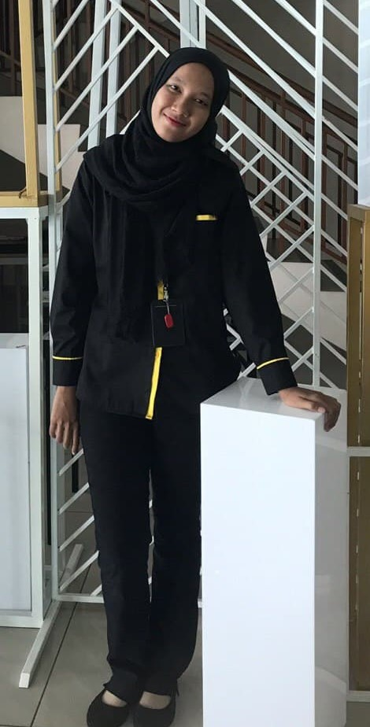

I am Alyaa!
My Education

I’m currently major in library management at UiTM Kedah. I recently in semester 6 then next semester it will be my internship. Trying my best to finish it very well and get my degree. Being in library management student I learn lot of things include collection management, information systems and technology, research methods, information literacy, cataloging and classification, preservation, reference, statistics and management. After graduate, I was planning to find job that qualification on my study especially as professional librarian. I think be professional librarian is fun because I can interact with users by helping them how to seeking information, help then to get their resources on their study or project.